Concept-level restart. Each direction pairs a name, a mark, a palette and a motion idea. No tokens or full system yet: pick a direction (and a name), then it gets polished. LIVE is the only red in any of them; errors are neutral (✕ + text). No amber or yellow anywhere (IMDb, Plex and DAZN own it).
One gesture, one motion, one soundNetflix ribbon + "tudum", Disney+'s arc leading to the +, Paramount+'s mountain and stars, Peacock's fluttering feathers: the mark is a moment, not a logo.
Light on darkMarquee bulb grids, spotlight cones, CRT/neon glow, bloom: entertainment brands glow. Flat tiles do not feel like a night in.
Colour energy, but a free hueBlue and violet are the streaming default; red, green, yellow/amber and orange are taken (Netflix, Hulu, IMDb/Plex, Letterboxd). Open: volt lime, orchid, teal/magenta.
Broadcast languageSlanted wipes and bugs (ESPN's fixed angle, DAZN's line motif), tally lights, lower thirds, SMPTE bars, film-leader slate: instantly "TV" and "live".
Fits a couchBig, bold, one focus at a time, 5% safe margins, one primary action; a short name that is easy to say; avoid boxing the app into one genre.
1
SLATE
Cinema · title card
Name: SLATE new name · clash: moderate (Slate AI and SlateCinema are movie-picker apps)
Every night is take one: the clapper snaps shut and the screen lights up.
marklockupapp icon96 / 48 px
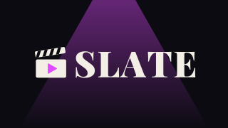
Google TV banner 320×180 (shown 1.3×)
3-colour core
ink#0C0B12chalk#F3EFE6orchid#E04BFF
Distance from known brand colours (reported values, ΔE×100; under 8 is close)
#E04BFF nearest Twitch (14.8)
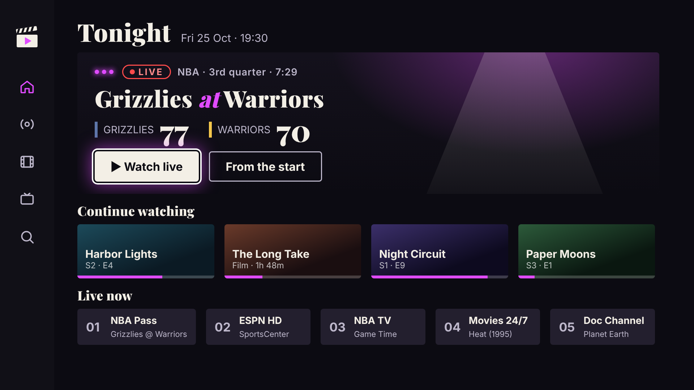
Rail + home at 1080p (rail carries the mark only; the lockup never shares this screen).
Launch: Dark. A spotlight cone fades up. The clapper stick snaps shut with a clack and the orchid play triangle flickers on like neon (3 flickers). SLATE wipes in left to right under the beam, holds, then the beam widens into the home screen. 2.0 s, clack plus a low swell.
+ Most "movies" of the four; instantly legible at any size; the white clapper is the strongest icon silhouette.
− Clapper boards are a cliché (every film app uses one); sports energy is only from the content.
↔ Icon: reads. Across the room: the white mark carries; neon glow only helps in the splash.
2
TIPOFF
Live sports · broadcast energy
Name: TIPOFF new name · clash: low in search (no streaming app found); sports-boxed
Game-night energy: a slanted wedge and an italic T that is already moving before you press play.
marklockup
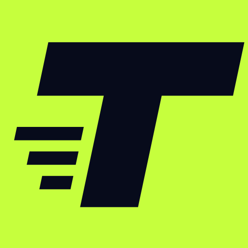
app icon96 / 48 px
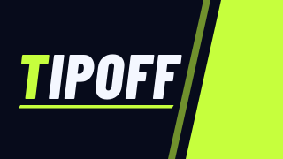
Google TV banner 320×180 (shown 1.3×)
3-colour core
ink#070B1Bvolt#C6FF3Dwhite#F4F7FF
Distance from known brand colours (reported values, ΔE×100; under 8 is close)
#C6FF3D nearest IMDb (15.1)
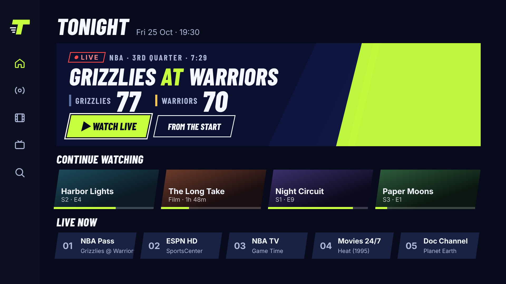
Rail + home at 1080p (rail carries the mark only; the lockup never shares this screen).
Launch: Hard cut to navy. A volt wedge wipes in at 12 degrees in three frames with a swish. TIPOFF slams in from the left, the T lands first with a 2-frame camera shake, streaks fly past, and the wedge sweeps off to reveal the home screen. 1.6 s, court squeak plus a hit.
+ Most energy; volt is empty space in the streaming field; the italic T works at 20 px.
− Name boxes the app as sports; volt tile is loud; italics tire in long text (limited to headings).
↔ Icon: the lime tile jumps out. Across the room: the wedge and the italic caps read from far away.
3
airtime
Streaming · colour as light
Name: airtime new name · clash: moderate (Airtime, the group-watch app)
Time on air: a glowing play button that is also an A, with colour behaving like light.
marklockup
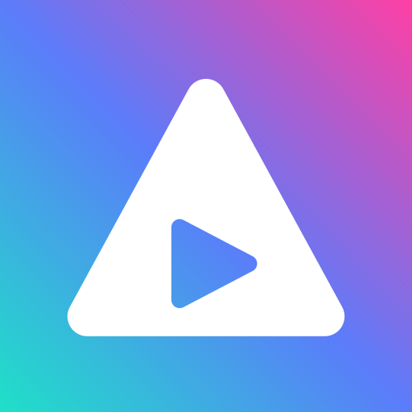
app icon96 / 48 px
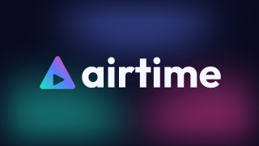
Google TV banner 320×180 (shown 1.3×)
3-colour core
teal#1FE0C8blue#5B7CFAmagenta#FF3FA4
Distance from known brand colours (reported values, ΔE×100; under 8 is close)
#1FE0C8 nearest Hulu (10.0)#5B7CFA nearest Paramount+ (9.1)#FF3FA4 nearest YouTube (16.3)
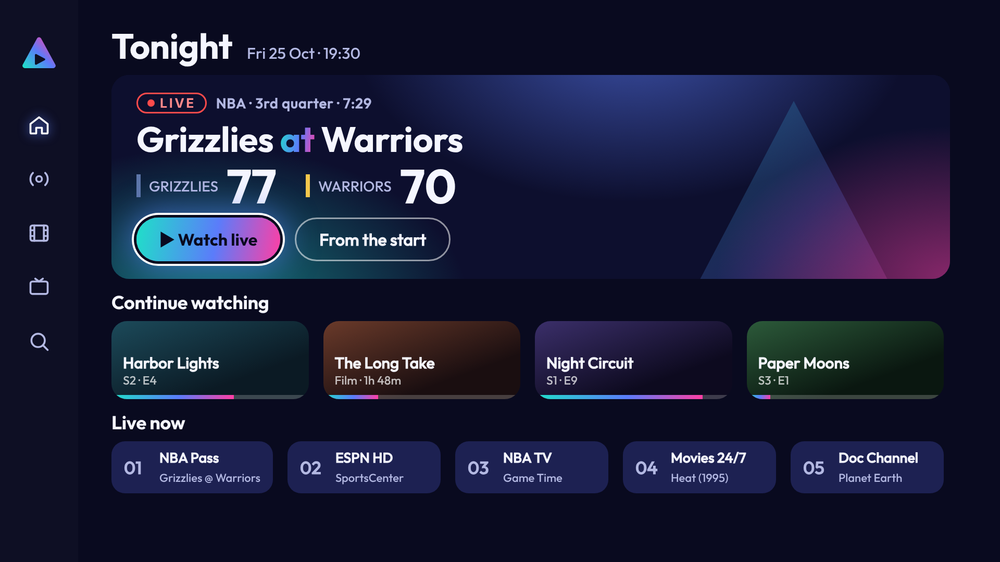
Rail + home at 1080p (rail carries the mark only; the lockup never shares this screen).
Launch: A soft bloom opens from the centre. The triangle draws on along its gradient (0.6 s), the play cut-out pops, then colour trails sweep outward like light through a prism. "airtime" rises in with a soft spring. The gradient floods the screen and dissolves into home. 2.2 s, rising shimmer plus a warm chord.
+ Play affordance is explicit; glow and gradient feel like "screen"; friendliest.
− Blue/violet/pink gradients are the streaming default, the least ownable palette; the name clashes with the Airtime app.
↔ Icon: the gradient tile reads. Across the room: fine, but the cut-out play is small below 48 px.
4
TUNER
Test card · broadcast heritage
Name: TUNER keeps TUNER · clash: low for a personal app (tuner hardware apps exist), reads technical; the direction embraces that
Own the engineering: the colour-bar test card, as party, becomes the T.
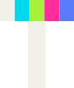
marklockup
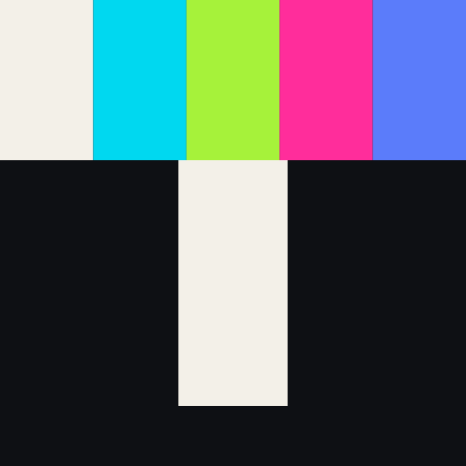
app icon96 / 48 px
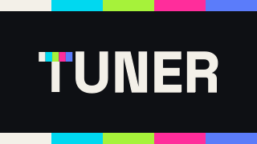
Google TV banner 320×180 (shown 1.3×)
3-colour core
ink#0E1014paper#F3F0E8aqua#00D8F0
Distance from known brand colours (reported values, ΔE×100; under 8 is close)
#00D8F0 nearest Letterboxd blue (7.9)#FF2D9B nearest YouTube (15.3)#A6F23A nearest Hulu (10.8)#5B7CFA nearest Paramount+ (9.1)
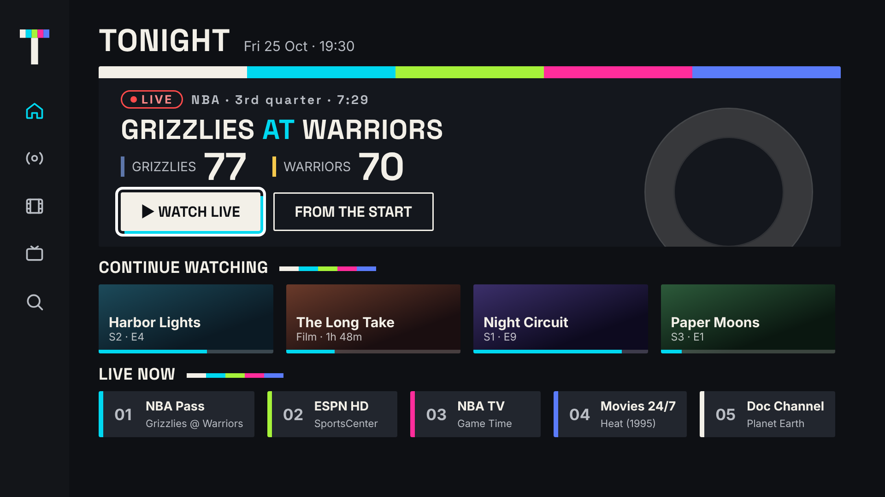
Rail + home at 1080p (rail carries the mark only; the lockup never shares this screen).
Launch: Black. A thin horizontal line opens with a 1 kHz "pip" into a full test card (five bars, 0.4 s). The bars collapse into the T's crossbar, the stem drops in, UNER types on, and the card settles into home. 1.8 s, test tone cut to a chord.
+ Keeps the name and turns "engineering" into charm; test card is unmistakably TV; most flexible motif (bars as dividers).
− Most playful, least "awesome"; five-colour crossbar is busy at 16 px; name still reads technical.
↔ Icon: colourful T pops from dark. Across the room: the bars carry; the stem alone is plain.
Launcher adjacency · each icon among generic tiles in IMDb / Plex / Netflix / Prime / Hulu colours (colour only, not their logos)
SLATE
IMDb
Plex
Netflix
Prime
Hulu
TIPOFF
IMDb
Plex
Netflix
Prime
Hulu
airtime
IMDb
Plex
Netflix
Prime
Hulu
TUNER
IMDb
Plex
Netflix
Prime
Hulu
Name shortlist (full checks in NAMES.md)
TUNER
keep
clean, short, but reads as radio/hardware; real "tuner" apps exist (HDHomeRun, D-Link TV Tuner, TV Mosaic)
TIPOFF
ok
live basketball, two clear syllables; no streaming app found; sports-only
SLATE
ok
film set and broadcast holding card; movie-picker apps share it
AIRTIME
ok
on air + hang time; the Airtime group-watch app
SPOOL
ok
film reel, "spool up"; no hit in search; weak on sport
FRONT ROW
maybe
best seat in the house; Apple once shipped a media app called Front Row; two words
COURTSIDE
avoid
perfect feel; Courtside 1891 (FIBA) is a basketball streaming app
CUE
avoid
CUE Broadcast is a live-TV streaming service
BUZZER
avoid
Buzzer is a sports app that distributed NBA League Pass
MARQUEE
avoid
Marquee Sports Network has its own app on connected TVs